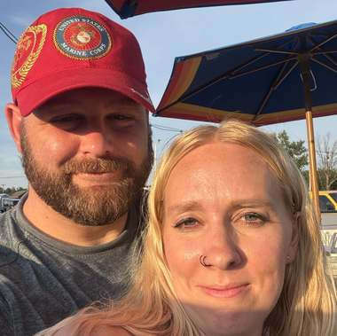

About us
Two parents in rural Ohio, building a place where moms can find help and find each other.

Who we are
We are Travis and Deborah Vought, and it is just the two of us. Deborah founded OhioMom, and Travis looks after the website.
We have four kids. One has type 1 diabetes and two have autism, so ours is a neurodivergent family. We live in rural Ohio, and we are involved in community building.
Why we made this
Finding help can be a job of its own, and it often falls to a mom who is already stretched thin. We wanted one place where she can find who to call, in plain words, without signing up for anything. Our family is neurodivergent, so help for kids who learn and grow differently, and for the parents raising them, matters a lot to us.
How we run it
- It is free. There is no sign-up and there are no ads, and nobody pays to be listed.
- Every listing comes from a published source and shows the date we checked it. Phone numbers and websites change, so if one is wrong, tell us and a person will review it.
- We are not a government office, a shelter or an emergency service. If you are in danger, call 911.
More on how we choose and check listings is on the Yoga Mom Talk About page.
Say hello
Know a group or an event we should add, see something out of date, or want to tell us what would help? Tell us, or talk to us.